MAX_TIME = 1
INIT_SIZE = 10
PREFIX = "10"17 HPT: sklearn SVC on Moons Data
This chapter is a tutorial for the Hyperparameter Tuning (HPT) of a sklearn SVC model on the Moons dataset.
17.1 Step 1: Setup
Before we consider the detailed experimental setup, we select the parameters that affect run time, initial design size and the device that is used.
Caution: Run time and initial design size should be increased for real experiments
- MAX_TIME is set to one minute for demonstration purposes. For real experiments, this should be increased to at least 1 hour.
- INIT_SIZE is set to 5 for demonstration purposes. For real experiments, this should be increased to at least 10.
17.2 Step 2: Initialization of the Empty fun_control Dictionary
spotPython supports the visualization of the hyperparameter tuning process with TensorBoard. The following example shows how to use TensorBoard with spotPython. The fun_control dictionary is the central data structure that is used to control the optimization process. It is initialized as follows:
from spotPython.utils.init import fun_control_init
from spotPython.hyperparameters.values import set_control_key_value
from spotPython.utils.eda import gen_design_table
fun_control = fun_control_init(
PREFIX=PREFIX,
TENSORBOARD_CLEAN=True,
max_time=MAX_TIME,
fun_evals=inf,
tolerance_x = np.sqrt(np.spacing(1)))Moving TENSORBOARD_PATH: runs/ to TENSORBOARD_PATH_OLD: runs_OLD/runs_2024_03_04_00_42_42
Created spot_tensorboard_path: runs/spot_logs/10_p040025_2024-03-04_00-42-42 for SummaryWriter()
Tip: TensorBoard
- Since the
spot_tensorboard_pathargument is notNone, which is the default,spotPythonwill log the optimization process in the TensorBoard folder. - The
TENSORBOARD_CLEANargument is set toTrueto archive the TensorBoard folder if it already exists. This is useful if you want to start a hyperparameter tuning process from scratch. If you want to continue a hyperparameter tuning process, setTENSORBOARD_CLEANtoFalse. Then the TensorBoard folder will not be archived and the old and new TensorBoard files will shown in the TensorBoard dashboard.
17.3 Step 3: SKlearn Load Data (Classification)
Randomly generate classification data.
import pandas as pd
import numpy as np
from sklearn.model_selection import train_test_split
from sklearn.datasets import make_moons, make_circles, make_classification
n_features = 2
n_samples = 500
target_column = "y"
ds = make_moons(n_samples, noise=0.5, random_state=0)
X, y = ds
X_train, X_test, y_train, y_test = train_test_split(
X, y, test_size=0.3, random_state=42
)
train = pd.DataFrame(np.hstack((X_train, y_train.reshape(-1, 1))))
test = pd.DataFrame(np.hstack((X_test, y_test.reshape(-1, 1))))
train.columns = [f"x{i}" for i in range(1, n_features+1)] + [target_column]
test.columns = [f"x{i}" for i in range(1, n_features+1)] + [target_column]
train.head()| x1 | x2 | y | |
|---|---|---|---|
| 0 | 1.960101 | 0.383172 | 0.0 |
| 1 | 2.354420 | -0.536942 | 1.0 |
| 2 | 1.682186 | -0.332108 | 0.0 |
| 3 | 1.856507 | 0.687220 | 1.0 |
| 4 | 1.925524 | 0.427413 | 1.0 |
import matplotlib.pyplot as plt
from matplotlib.colors import ListedColormap
x_min, x_max = X[:, 0].min() - 0.5, X[:, 0].max() + 0.5
y_min, y_max = X[:, 1].min() - 0.5, X[:, 1].max() + 0.5
cm = plt.cm.RdBu
cm_bright = ListedColormap(["#FF0000", "#0000FF"])
ax = plt.subplot(1, 1, 1)
ax.set_title("Input data")
# Plot the training points
ax.scatter(X_train[:, 0], X_train[:, 1], c=y_train, cmap=cm_bright, edgecolors="k")
# Plot the testing points
ax.scatter(
X_test[:, 0], X_test[:, 1], c=y_test, cmap=cm_bright, alpha=0.6, edgecolors="k"
)
ax.set_xlim(x_min, x_max)
ax.set_ylim(y_min, y_max)
ax.set_xticks(())
ax.set_yticks(())
plt.tight_layout()
plt.show()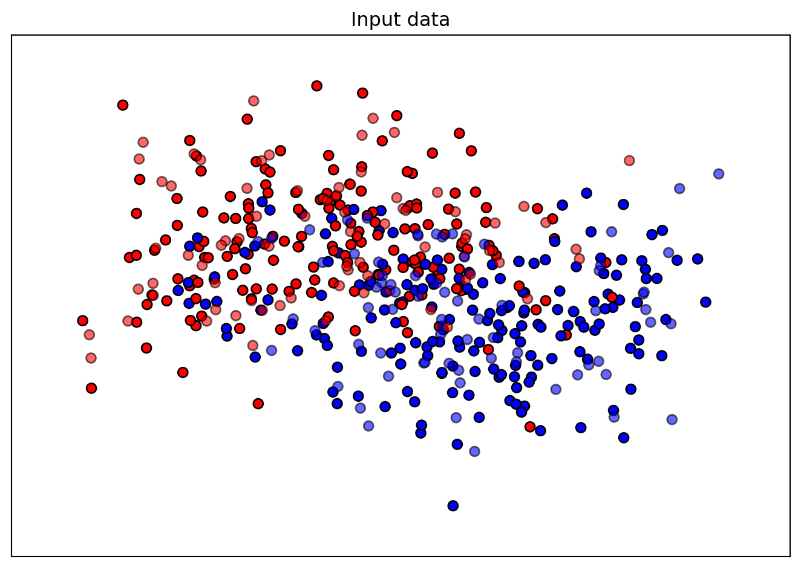
n_samples = len(train)
# add the dataset to the fun_control
fun_control.update({"data": None, # dataset,
"train": train,
"test": test,
"n_samples": n_samples,
"target_column": target_column})17.4 Step 4: Specification of the Preprocessing Model
Data preprocesssing can be very simple, e.g., you can ignore it. Then you would choose the prep_model “None”:
prep_model = None
fun_control.update({"prep_model": prep_model})A default approach for numerical data is the StandardScaler (mean 0, variance 1). This can be selected as follows:
from sklearn.preprocessing import StandardScaler
prep_model = StandardScaler()
fun_control.update({"prep_model": prep_model})Even more complicated pre-processing steps are possible, e.g., the follwing pipeline:
categorical_columns = []
one_hot_encoder = OneHotEncoder(handle_unknown="ignore", sparse_output=False)
prep_model = ColumnTransformer(
transformers=[
("categorical", one_hot_encoder, categorical_columns),
],
remainder=StandardScaler(),
)17.5 Step 5: Select Model (algorithm) and core_model_hyper_dict
The selection of the algorithm (ML model) that should be tuned is done by specifying the its name from the sklearn implementation. For example, the SVC support vector machine classifier is selected as follows:
from spotPython.hyperparameters.values import add_core_model_to_fun_control
from spotPython.hyperdict.sklearn_hyper_dict import SklearnHyperDict
from sklearn.svm import SVC
add_core_model_to_fun_control(core_model=SVC,
fun_control=fun_control,
hyper_dict=SklearnHyperDict,
filename=None)Now fun_control has the information from the JSON file. The corresponding entries for the core_model class are shown below.
fun_control['core_model_hyper_dict']{'C': {'type': 'float',
'default': 1.0,
'transform': 'None',
'lower': 0.1,
'upper': 10.0},
'kernel': {'levels': ['linear', 'poly', 'rbf', 'sigmoid'],
'type': 'factor',
'default': 'rbf',
'transform': 'None',
'core_model_parameter_type': 'str',
'lower': 0,
'upper': 3},
'degree': {'type': 'int',
'default': 3,
'transform': 'None',
'lower': 3,
'upper': 3},
'gamma': {'levels': ['scale', 'auto'],
'type': 'factor',
'default': 'scale',
'transform': 'None',
'core_model_parameter_type': 'str',
'lower': 0,
'upper': 1},
'coef0': {'type': 'float',
'default': 0.0,
'transform': 'None',
'lower': 0.0,
'upper': 0.0},
'shrinking': {'levels': [0, 1],
'type': 'factor',
'default': 0,
'transform': 'None',
'core_model_parameter_type': 'bool',
'lower': 0,
'upper': 1},
'probability': {'levels': [0, 1],
'type': 'factor',
'default': 0,
'transform': 'None',
'core_model_parameter_type': 'bool',
'lower': 0,
'upper': 1},
'tol': {'type': 'float',
'default': 0.001,
'transform': 'None',
'lower': 0.0001,
'upper': 0.01},
'cache_size': {'type': 'float',
'default': 200,
'transform': 'None',
'lower': 100,
'upper': 400},
'break_ties': {'levels': [0, 1],
'type': 'factor',
'default': 0,
'transform': 'None',
'core_model_parameter_type': 'bool',
'lower': 0,
'upper': 1}}sklearn Model Selection
The following sklearn models are supported by default:
- RidgeCV
- RandomForestClassifier
- SVC
- LogisticRegression
- KNeighborsClassifier
- GradientBoostingClassifier
- GradientBoostingRegressor
- ElasticNet
They can be imported as follows:
from sklearn.linear_model import RidgeCV
from sklearn.ensemble import RandomForestClassifier
from sklearn.svm import SVC
from sklearn.linear_model import LogisticRegression
from sklearn.neighbors import KNeighborsClassifier
from sklearn.ensemble import GradientBoostingClassifier
from sklearn.ensemble import GradientBoostingRegressor
from sklearn.linear_model import ElasticNet17.6 Step 6: Modify hyper_dict Hyperparameters for the Selected Algorithm aka core_model
spotPython provides functions for modifying the hyperparameters, their bounds and factors as well as for activating and de-activating hyperparameters without re-compilation of the Python source code. These functions were described in ?sec-modification-of-hyperparameters-14.
17.6.1 Modify hyperparameter of type numeric and integer (boolean)
Numeric and boolean values can be modified using the modify_hyper_parameter_bounds method.
sklearn Model Hyperparameters
The hyperparameters of the sklearn SVC model are described in the sklearn documentation.
- For example, to change the
tolhyperparameter of theSVCmodel to the interval [1e-5, 1e-3], the following code can be used:
from spotPython.hyperparameters.values import modify_hyper_parameter_bounds
modify_hyper_parameter_bounds(fun_control, "tol", bounds=[1e-5, 1e-3])
modify_hyper_parameter_bounds(fun_control, "probability", bounds=[0, 0])
fun_control["core_model_hyper_dict"]["tol"]{'type': 'float',
'default': 0.001,
'transform': 'None',
'lower': 1e-05,
'upper': 0.001}17.6.2 Modify hyperparameter of type factor
Factors can be modified with the modify_hyper_parameter_levels function. For example, to exclude the sigmoid kernel from the tuning, the kernel hyperparameter of the SVC model can be modified as follows:
from spotPython.hyperparameters.values import modify_hyper_parameter_levels
modify_hyper_parameter_levels(fun_control, "kernel", ["poly", "rbf"])
fun_control["core_model_hyper_dict"]["kernel"]{'levels': ['poly', 'rbf'],
'type': 'factor',
'default': 'rbf',
'transform': 'None',
'core_model_parameter_type': 'str',
'lower': 0,
'upper': 1}17.6.3 Optimizers
Optimizers are described in ?sec-optimizers-14.
17.7 Step 7: Selection of the Objective (Loss) Function
There are two metrics:
metric_riveris used for the river based evaluation viaeval_oml_iter_progressive.metric_sklearnis used for the sklearn based evaluation.
from sklearn.metrics import mean_absolute_error, accuracy_score, roc_curve, roc_auc_score, log_loss, mean_squared_error
fun_control.update({
"metric_sklearn": log_loss,
"weights": 1.0,
})metric_sklearn: Minimization and Maximization
- Because the
metric_sklearnis used for the sklearn based evaluation, it is important to know whether the metric should be minimized or maximized. - The
weightsparameter is used to indicate whether the metric should be minimized or maximized. - If
weightsis set to-1.0, the metric is maximized. - If
weightsis set to1.0, the metric is minimized, e.g.,weights = 1.0formean_absolute_error, orweights = -1.0forroc_auc_score.
17.7.1 Predict Classes or Class Probabilities
If the key "predict_proba" is set to True, the class probabilities are predicted. False is the default, i.e., the classes are predicted.
fun_control.update({
"predict_proba": False,
})17.8 Step 8: Calling the SPOT Function
17.8.1 The Objective Function
The objective function is selected next. It implements an interface from sklearn’s training, validation, and testing methods to spotPython.
from spotPython.fun.hypersklearn import HyperSklearn
fun = HyperSklearn().fun_sklearnThe following code snippet shows how to get the default hyperparameters as an array, so that they can be passed to the Spot function.
from spotPython.hyperparameters.values import get_default_hyperparameters_as_array
X_start = get_default_hyperparameters_as_array(fun_control)17.8.2 Run the Spot Optimizer
The class Spot [SOURCE] is the hyperparameter tuning workhorse. It is initialized with the following parameters:
fun: the objective functionfun_control: the dictionary with the control parameters for the objective functiondesign: the experimental designdesign_control: the dictionary with the control parameters for the experimental designsurrogate: the surrogate modelsurrogate_control: the dictionary with the control parameters for the surrogate modeloptimizer: the optimizeroptimizer_control: the dictionary with the control parameters for the optimizer
Note: Total run time
The total run time may exceed the specified max_time, because the initial design (here: init_size = INIT_SIZE as specified above) is always evaluated, even if this takes longer than max_time.
from spotPython.utils.init import design_control_init, surrogate_control_init
design_control = design_control_init()
set_control_key_value(control_dict=design_control,
key="init_size",
value=INIT_SIZE,
replace=True)
surrogate_control = surrogate_control_init(noise=True,
n_theta=2)
from spotPython.spot import spot
spot_tuner = spot.Spot(fun=fun,
fun_control=fun_control,
design_control=design_control,
surrogate_control=surrogate_control)
spot_tuner.run(X_start=X_start)spotPython tuning: 5.734217584632275 [----------] 1.48%
spotPython tuning: 5.734217584632275 [----------] 3.16%
spotPython tuning: 5.734217584632275 [#---------] 5.38%
spotPython tuning: 5.734217584632275 [#---------] 7.33%
spotPython tuning: 5.734217584632275 [#---------] 9.49%
spotPython tuning: 5.734217584632275 [#---------] 11.35%
spotPython tuning: 5.734217584632275 [#---------] 13.88%
spotPython tuning: 5.734217584632275 [##--------] 18.43%
spotPython tuning: 5.734217584632275 [##--------] 24.04%
spotPython tuning: 5.734217584632275 [###-------] 30.50%
spotPython tuning: 5.734217584632275 [####------] 37.33%
spotPython tuning: 5.734217584632275 [####------] 42.47%
spotPython tuning: 5.734217584632275 [#####-----] 47.01%
spotPython tuning: 5.734217584632275 [#####-----] 51.38%
spotPython tuning: 5.734217584632275 [#####-----] 54.71%
spotPython tuning: 5.734217584632275 [######----] 58.69%
spotPython tuning: 5.734217584632275 [#######---] 65.11%
spotPython tuning: 5.734217584632275 [#######---] 71.31%
spotPython tuning: 5.734217584632275 [########--] 75.16%
spotPython tuning: 5.734217584632275 [########--] 78.95%
spotPython tuning: 5.734217584632275 [########--] 82.85%
spotPython tuning: 5.734217584632275 [#########-] 87.66%
spotPython tuning: 5.734217584632275 [#########-] 92.12%
spotPython tuning: 5.734217584632275 [##########] 100.00% Done...
<spotPython.spot.spot.Spot at 0x2bda034d0>17.8.3 TensorBoard
Now we can start TensorBoard in the background with the following command, where ./runs is the default directory for the TensorBoard log files:
tensorboard --logdir="./runs"
Tip: TENSORBOARD_PATH
The TensorBoard path can be printed with the following command:
from spotPython.utils.init import get_tensorboard_path
get_tensorboard_path(fun_control)'runs/'We can access the TensorBoard web server with the following URL:
http://localhost:6006/The TensorBoard plot illustrates how spotPython can be used as a microscope for the internal mechanisms of the surrogate-based optimization process. Here, one important parameter, the learning rate \(\theta\) of the Kriging surrogate [SOURCE] is plotted against the number of optimization steps.

17.9 Step 9: Results
After the hyperparameter tuning run is finished, the results can be saved and reloaded with the following commands:
from spotPython.utils.file import save_pickle, load_pickle
from spotPython.utils.init import get_experiment_name
experiment_name = get_experiment_name(PREFIX)
SAVE_AND_LOAD = False
if SAVE_AND_LOAD == True:
save_pickle(spot_tuner, experiment_name)
spot_tuner = load_pickle(experiment_name)After the hyperparameter tuning run is finished, the progress of the hyperparameter tuning can be visualized. The black points represent the performace values (score or metric) of hyperparameter configurations from the initial design, whereas the red points represents the hyperparameter configurations found by the surrogate model based optimization.
spot_tuner.plot_progress(log_y=True, filename="./figures/" + experiment_name+"_progress.pdf")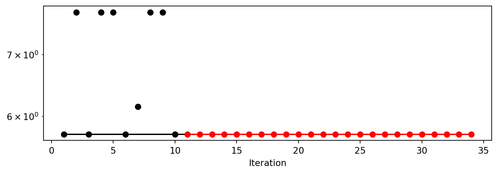
Results can also be printed in tabular form.
print(gen_design_table(fun_control=fun_control, spot=spot_tuner))| name | type | default | lower | upper | tuned | transform | importance | stars |
|-------------|--------|-----------|---------|---------|----------------------|-------------|--------------|---------|
| C | float | 1.0 | 0.1 | 10.0 | 2.394471655384338 | None | 0.04 | |
| kernel | factor | rbf | 0.0 | 1.0 | rbf | None | 100.00 | *** |
| degree | int | 3 | 3.0 | 3.0 | 3.0 | None | 0.00 | |
| gamma | factor | scale | 0.0 | 1.0 | scale | None | 8.87 | * |
| coef0 | float | 0.0 | 0.0 | 0.0 | 0.0 | None | 0.00 | |
| shrinking | factor | 0 | 0.0 | 1.0 | 0 | None | 0.00 | |
| probability | factor | 0 | 0.0 | 0.0 | 0 | None | 0.00 | |
| tol | float | 0.001 | 1e-05 | 0.001 | 0.000982585315792582 | None | 0.35 | . |
| cache_size | float | 200.0 | 100.0 | 400.0 | 375.6371648003268 | None | 0.00 | |
| break_ties | factor | 0 | 0.0 | 1.0 | 0 | None | 39.32 | * |A histogram can be used to visualize the most important hyperparameters.
spot_tuner.plot_importance(threshold=0.0025, filename="./figures/" + experiment_name+"_importance.pdf")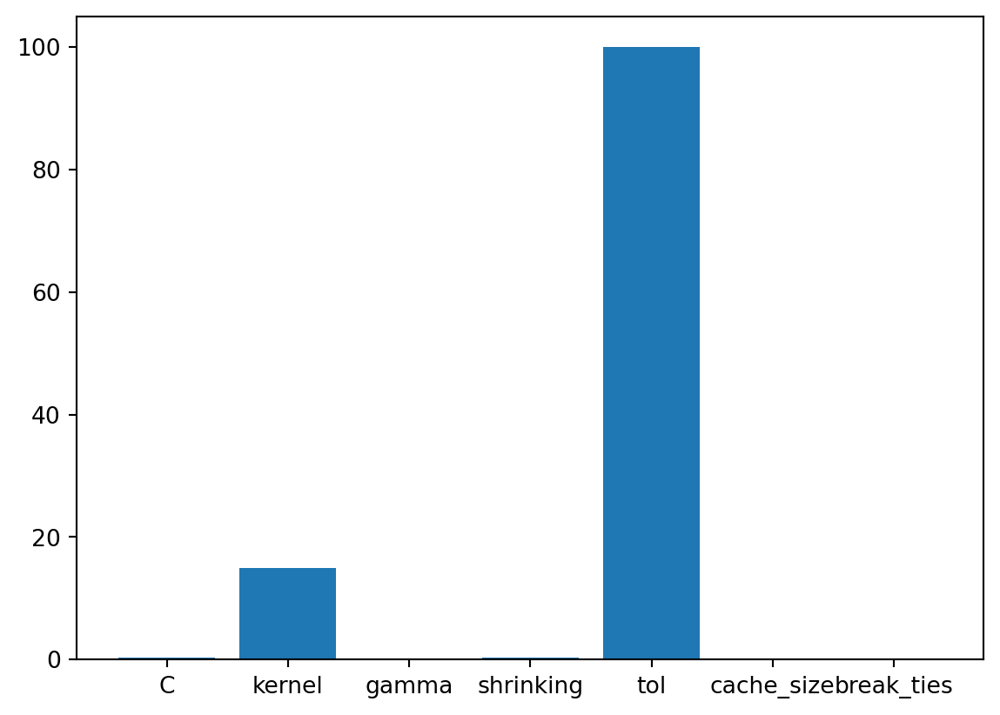
17.10 Get Default Hyperparameters
The default hyperparameters, whihc will be used for a comparion with the tuned hyperparameters, can be obtained with the following commands:
from spotPython.hyperparameters.values import get_one_core_model_from_X
from spotPython.hyperparameters.values import get_default_hyperparameters_as_array
X_start = get_default_hyperparameters_as_array(fun_control)
model_default = get_one_core_model_from_X(X_start, fun_control)
model_defaultSVC(break_ties=0, cache_size=200.0, probability=0, shrinking=0)In a Jupyter environment, please rerun this cell to show the HTML representation or trust the notebook.
On GitHub, the HTML representation is unable to render, please try loading this page with nbviewer.org.
SVC(break_ties=0, cache_size=200.0, probability=0, shrinking=0)
17.11 Get SPOT Results
In a similar way, we can obtain the hyperparameters found by spotPython.
from spotPython.hyperparameters.values import get_one_core_model_from_X
X = spot_tuner.to_all_dim(spot_tuner.min_X.reshape(1,-1))
model_spot = get_one_core_model_from_X(X, fun_control)17.11.1 Plot: Compare Predictions
from spotPython.plot.validation import plot_roc
plot_roc(model_list=[model_default, model_spot], fun_control= fun_control, model_names=["Default", "Spot"])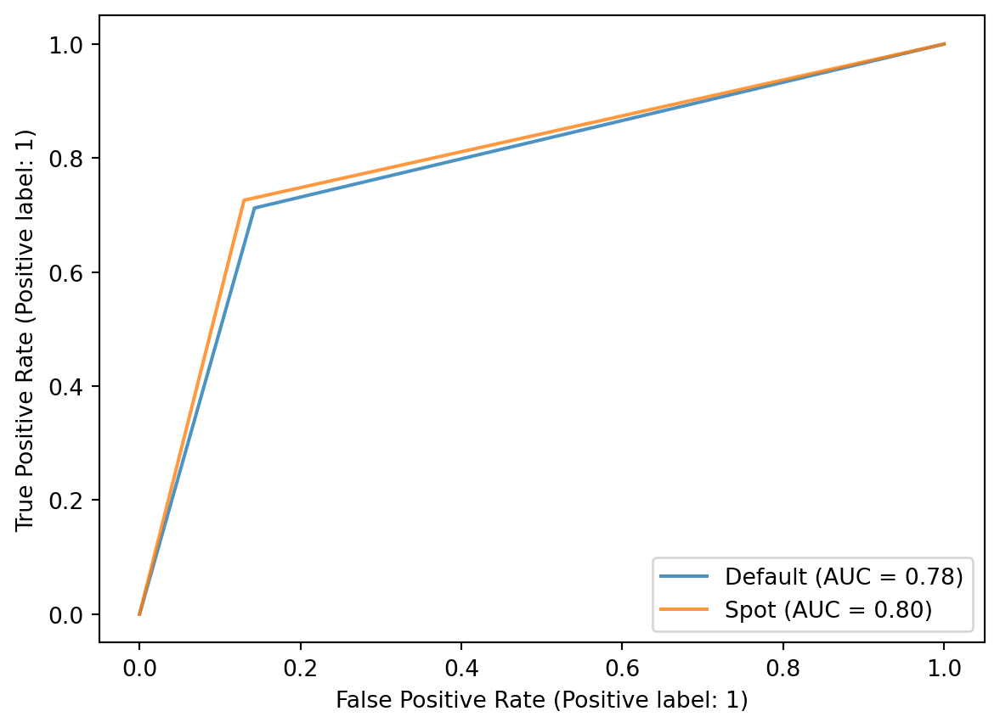
from spotPython.plot.validation import plot_confusion_matrix
plot_confusion_matrix(model=model_default, fun_control=fun_control, title = "Default")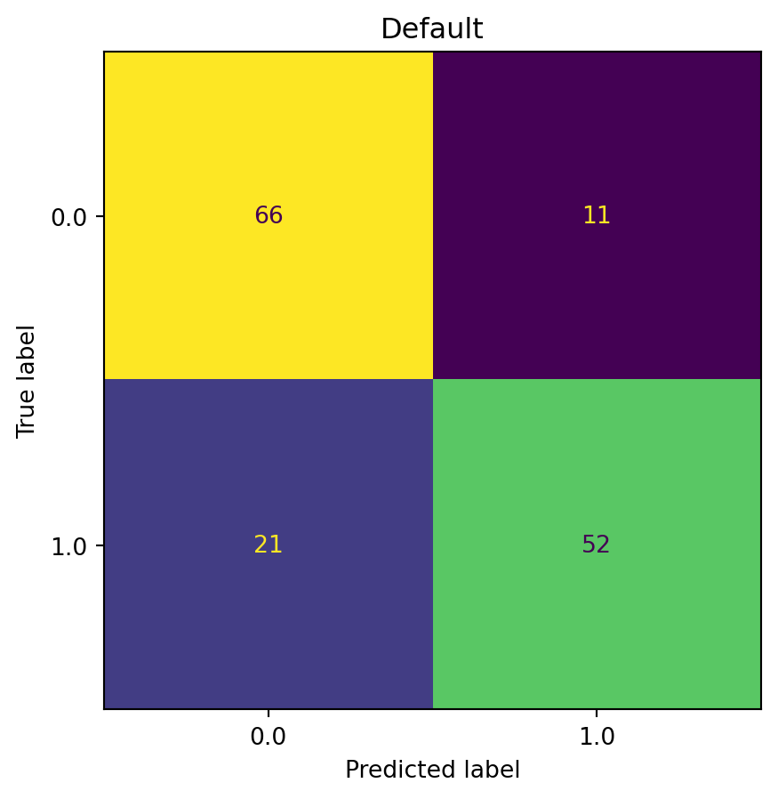
plot_confusion_matrix(model=model_spot, fun_control=fun_control, title="SPOT")min(spot_tuner.y), max(spot_tuner.y)(5.734217584632275, 7.782152436286657)17.11.2 Detailed Hyperparameter Plots
spot_tuner.plot_important_hyperparameter_contour(filename=None)C: 0.036919765169053445
kernel: 100.0
gamma: 8.873997386200953
tol: 0.35230392429185425
break_ties: 39.32026402845163
impo: [['C', 0.036919765169053445], ['kernel', 100.0], ['gamma', 8.873997386200953], ['shrinking', 0.0011051411138422679], ['tol', 0.35230392429185425], ['cache_size', 0.0011229201239674128], ['break_ties', 39.32026402845163]]
impo after select: [['C', 0.036919765169053445], ['kernel', 100.0], ['gamma', 8.873997386200953], ['shrinking', 0.0011051411138422679], ['tol', 0.35230392429185425], ['cache_size', 0.0011229201239674128], ['break_ties', 39.32026402845163]]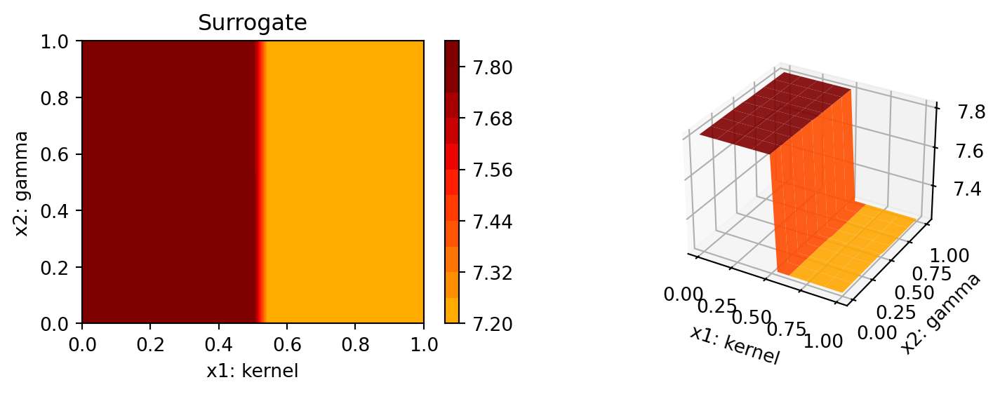
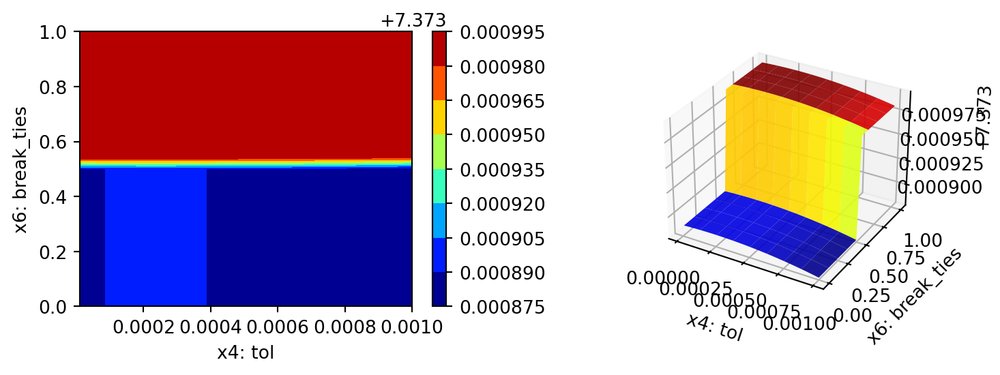
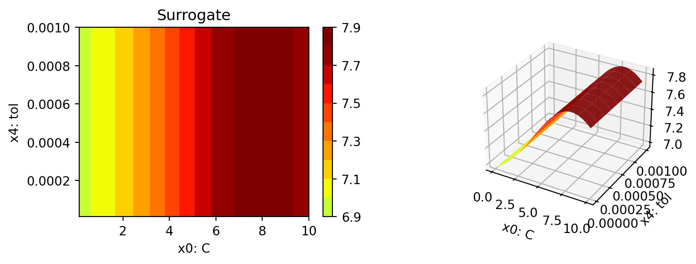
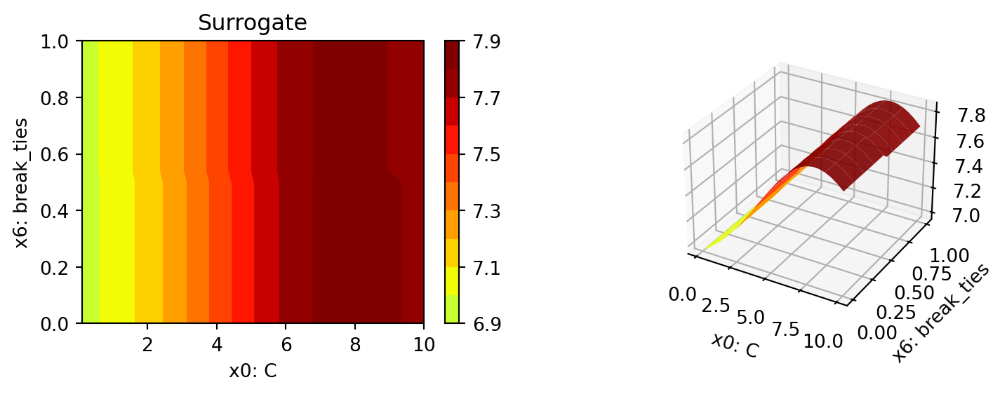
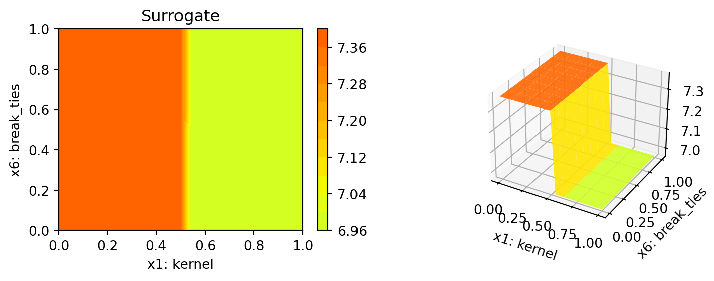

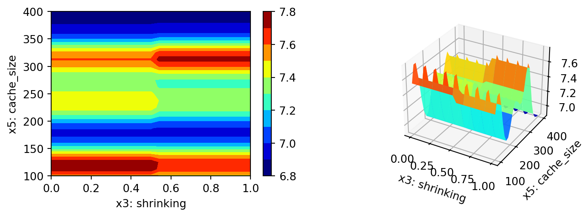
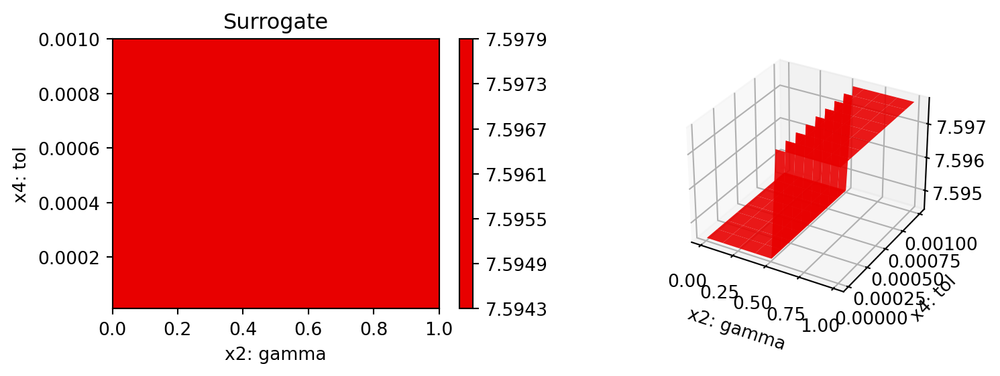
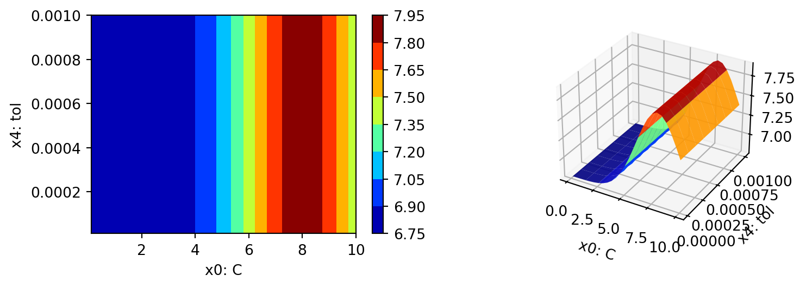
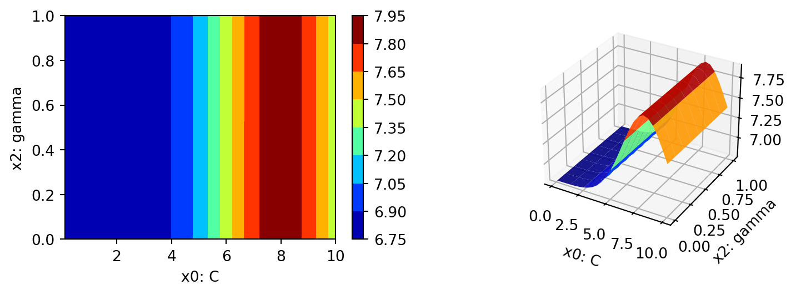
17.11.3 Parallel Coordinates Plot
spot_tuner.parallel_plot()17.11.4 Plot all Combinations of Hyperparameters
- Warning: this may take a while.
PLOT_ALL = False
if PLOT_ALL:
n = spot_tuner.k
for i in range(n-1):
for j in range(i+1, n):
spot_tuner.plot_contour(i=i, j=j, min_z=min_z, max_z = max_z)